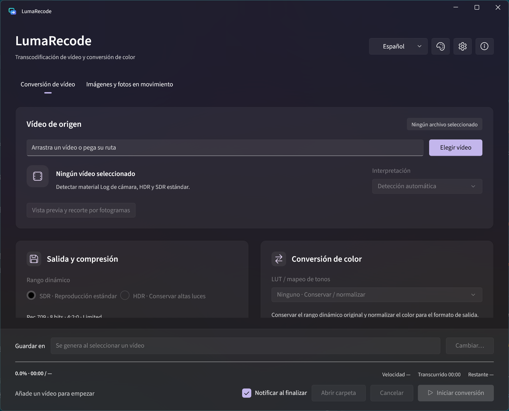
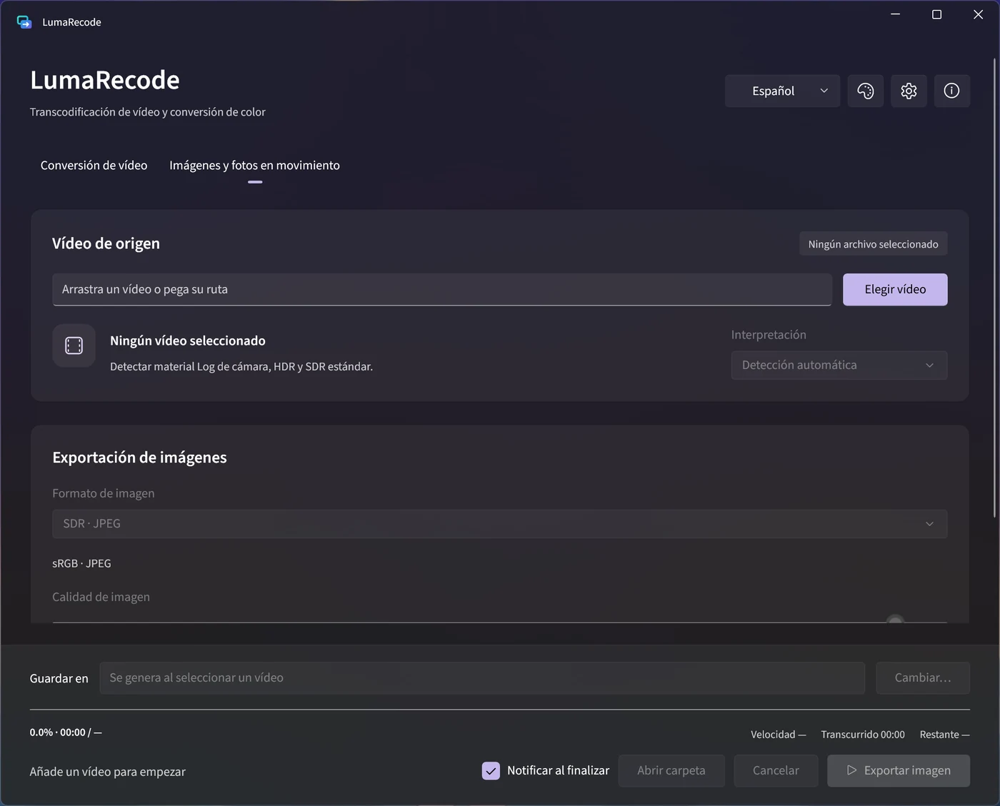

Windows y macOS · Código abierto
Convierte vídeo con control del color.
Convierte material Log y HDR, recorta con precisión de fotograma y exporta imágenes o fotos en movimiento desde tus vídeos.

Log y HDR
Convierte material Log de cámara, HLG o PQ a HDR o SDR. Consulta el color y los metadatos antes de codificar, o elige una LUT adecuada.
Recorte por fotogramas
Reproduce el vídeo, recorre la línea de tiempo o avanza fotograma a fotograma para fijar el inicio y el final exactos.
Compartir o archivar
Usa un codificador de hardware disponible para compartir rápido o elige la codificación por software para archivar.

Una foto de cualquier fotograma.
Exporta JPEG Ultra HDR o fotos en movimiento de Android en Windows. En macOS, exporta HEIC HDR, HEIC con HDR adaptativo y Live Photos de Apple.
Consultar la guía de plataformasDescargar LumaRecode
- Windows 11 · x64 o ARM64
- El paquete MSIX distribuido a través de Microsoft Store está firmado digitalmente por Microsoft. Native AOT en ZIP portátil, EXE único o MSI, con FFmpeg opcional incluido.
- macOS 27 o posterior · Apple silicon
- DMG estándar o DMG FFmpeg Full con las herramientas de conversión incluidas.